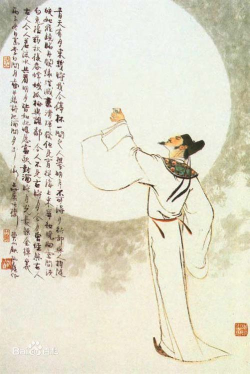
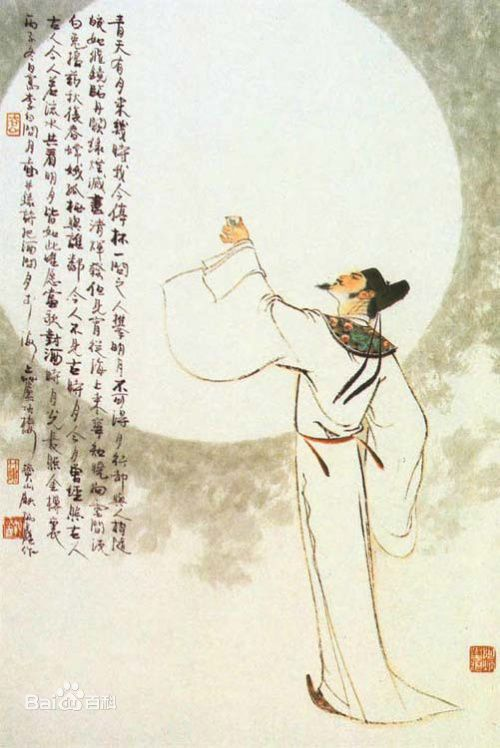
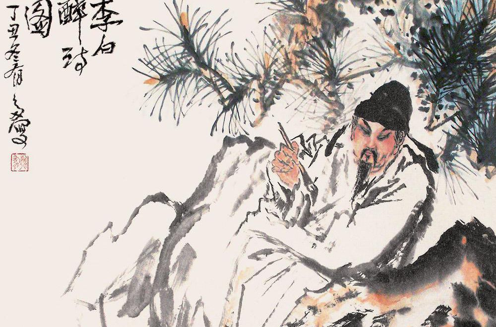
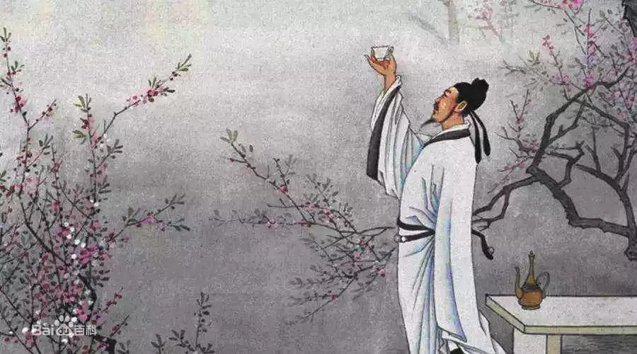

李白（701年－762年） ，字太白，号青莲居士，又号“谪仙人”，是唐代伟大的浪漫主义诗人，
被后人誉为“诗仙”，与杜甫并称为“李杜”，为了与另两位诗人李商隐与杜牧即“小李杜”区别，
杜甫与李白又合称“大李杜”。据《新唐书》记载，李白为兴圣皇帝（凉武昭王李暠）九世孙，
与李唐诸王同宗。其人爽朗大方，爱饮酒作诗，喜交友。
李白深受黄老列庄思想影响，
有《李太白集》传世，诗作中多以醉时写的，代表作有《望庐山瀑布》《行路难》
《蜀道难》《将进酒》《梁甫吟》《早发白帝城》等多首。
李白所作词赋，宋人已有传记（如文莹《湘山野录》卷上），
就其开创意义及艺术成就而言，“李白词”享有极为崇高的地位。
 主要成就
诗歌 综述
李白的乐府、歌行及绝句成就为最高。其歌行，完全打破诗歌创作的一切固有格式，
空无依傍，笔法多端，达到了任随性之而变幻莫测、摇曳多姿的神奇境界。李白的绝句自然明快，飘逸潇洒，能以简洁明快的语言
表达出无尽的情思。在盛唐诗人中，王维、孟浩然长于五绝，王昌龄等七绝写得很好，兼长五绝与七绝而且同臻极境的，只有李白一人。 李白的诗雄奇飘逸，艺术成就极高。他讴歌祖国山河与美丽的自然风光，风格雄奇奔放，
俊逸清新，富有浪漫主义精神，达到了内容与艺术的统一。他被贺知章称为“谪仙人”，其诗大多为描写山水和抒发内心的情感为主。
李白的诗具有“笔落惊风雨，诗成泣鬼神”的艺术魅力，这也是他的诗歌中最鲜明的艺术特色。李白的诗富于自我表现的主观抒情色彩十分浓烈，
感情的表达具有一种排山倒海、一泻千里的气势。他与杜甫并称为“大李杜”，（李商隐与杜牧并称为“小李杜”）。
李白诗中常将想象、夸张、比喻、拟人等手法综合运用，从而造成神奇异彩、瑰丽动人的意境，
这就是李白的浪漫主义诗作给人以豪迈奔放、飘逸若仙的原因所在。
李白的诗歌对后代产生了极为深远的影响。中唐的韩愈、孟郊、李贺，宋代的苏轼、陆游、辛弃疾，
明清的高启、杨慎、龚自珍等著名诗人，都受到李白诗歌的巨大影响。
风格
豪迈奔放，清新飘逸，想象丰富，意境奇妙，语言奇妙，浪漫主义，立意清晰。
李白生活在盛唐时期，他性格豪迈，热爱祖国山河，游踪遍及南北各地，写出大量赞美名
山大川的壮丽诗篇。他的诗，既豪迈奔放，又清新飘逸，而且想象丰富，意境奇妙，语言轻快，人们称他为“诗仙”。李白的诗歌不
仅具有典型的浪漫主义精神，而且从形象塑造、素材摄取、到体裁选择和各种艺术手法的运用，无不具有典型的浪漫主义艺术特征。
李白成功地在中塑造自我，强烈地表现自我，突出抒情主人公的独特个性，因而他的诗歌具有鲜明的
浪漫主义特色。他喜欢采用雄奇的形象表现自我，在诗中毫不掩饰、也不加节制地抒发感情，表现他的喜怒哀乐。对权豪势要，
他“手持一枝菊，调笑二千石”（《醉后寄崔侍御》二首之一）；看到劳动人民艰辛劳作时，他“心摧泪如雨”。当社稷倾覆、
民生涂炭时，他“过江誓流水，志在清中原。拔剑击前柱，悲歌难重论”（《南奔书怀》），那样慷慨激昂；与朋友开怀畅饮时，
“两人对酌山花开，一杯一杯复一杯。我醉欲眠卿且去，明朝有意抱琴来”（《山中与幽人对酌》），又是那样天真直率。
总之，他的诗活脱脱地表现了他豪放不羁的性格和倜（俶）傥不群的形象。
豪放是李白诗歌的主要特征。除了思想性格才情遭际诸因素外，李白诗歌采用的艺术表现手法和体裁
结构也是形成他豪放飘逸风格的重要原因。善于凭借想象，以主观现客观是李白诗歌浪漫主义艺术手法的重要特征。
几乎篇篇有想象，甚至有的通篇运用多种多样的想象。现实事物、自然景观、神话传说、历史典故、梦中幻境，无不成为他想象的媒介。
常借助想象，超越时空，将现实与梦境、仙境，把自然界与人类社会交织一起，再现客观现实。他笔下的形象不是客观现实的直接反映，
而是其内心主观世界的外化，艺术的真实。
李白诗歌的浪漫主义艺术手法之一是把拟人与比喻巧妙地结合起来，移情于物，将物比人。
李白诗歌的另一个浪漫主义艺术手法是抓住事情的某一特点，在生活真实的基础上，加以大胆的想象夸张。
他的夸张不仅想象奇特，而且总是与具体事物相结合，夸张得那么自然，不露痕迹；那么大胆，又真实可信，起到突出形象、
强化感情的作用。有时他还把大胆的夸张与鲜明的对比结合起来，通过加大艺术反差，加强艺术效果。
李白最擅长的体裁是七言歌行和绝句。李白的七言歌行又采用了大开大合、跳跃宕荡的结构。
诗的开头常突兀如狂飙骤起，而诗的中间形象转换倏忽，往往省略过渡照应，似无迹可循，诗的结尾多在感情高潮处戛然而止。
李白的五七言绝句，更多地代表了他的诗歌清新明丽的风格。如《早发白帝城》、《送孟浩然之广陵》、
《静夜思》等，妙在“只眼前景、口头语、而有弦外音、味外味，使人神远。”（《说诗晬语》上）。